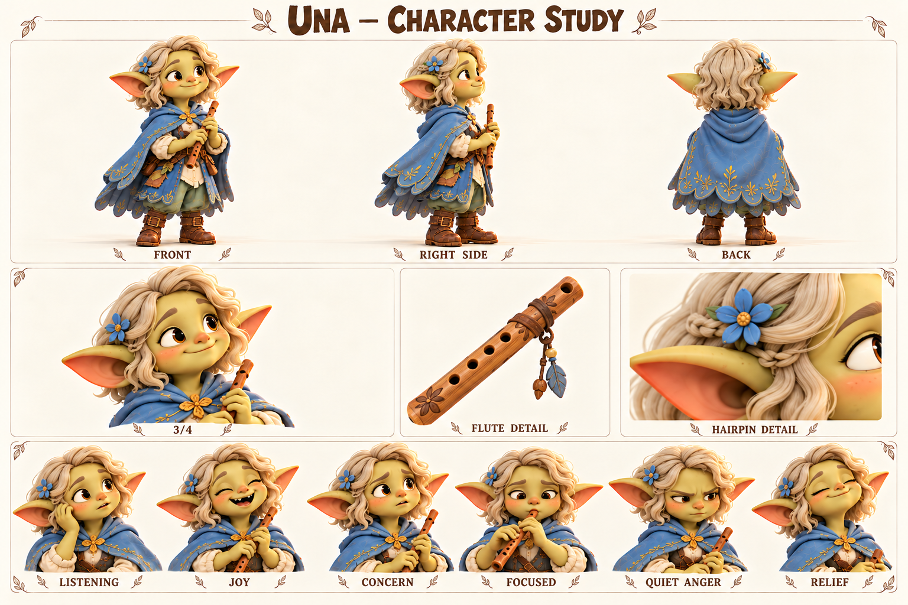

Чего хочет
Сохранить звуки знакомых мест и делиться собственной музыкой.
Слышит настроение места и учится быть услышанной самой.
Взрослая музыкантка, подруга Jo и Миры; внимательная слушательница со своим мнением.

Пепельно-пшеничные короткие волны; маленькая косичка; небесная накидка; свирель.
Палитра: Светлая пшеница / небесный / индиго.
Уна запоминает дорогу по звукам: вода под мостком, скрип верёвки, два удара ставни на ветру. Игра на свирели выросла из попыток повторить эти маленькие ритмы. Она не считает музыку особой магией; для неё это способ заметить знакомое заново. Шал иногда узнаёт по её мелодии, какой участок реки она слушала.
Людям рядом с Уной легко говорить, потому что она не торопит с ответом. Постепенно её стали считать всегда согласной. На общих встречах она играла то, что просили, даже когда принесла новую собственную мелодию. Мира первой заметила, что свирель уже убрана, а Уна ещё хотела что-то сказать. Их дружба держится не только на поддержке: Уна умеет мягко, но прямо остановить Мирину привычку всё организовывать.
Будущий сюжет может начаться с разногласия о шумном празднике или маршруте вдоль реки. Уна услышит изменение привычного звука и предложит остановиться, но её тихая фраза потеряется. Её задача — повторить важное твёрдо, не превращаясь в другого человека. Она останется спокойной, а её голос приобретёт вес. Свирель помогает выразить эмоцию, но не заменяет прямое «нет».
Сохранить звуки знакомых мест и делиться собственной музыкой.
Высказывать желания и несогласие до того, как молчание превратится в обиду.
Что громкий спор разрушит близость или что её песня никому не нужна.
Слишком долго уступает, ожидая, что другие догадаются сами.
Внимание, эмоциональная точность, терпение и способность заметить изменение обстановки.
Помогает другим выговориться, а собственную просьбу откладывает.
Темп и ритм. Ровный, с осмысленными паузами; предложения короткие, но не загадочные.
Слова и построение фразы. Слышишь, подожди, мне хочется, тише, вместе. Образные слова редко и к месту.
Юмор. Негромкое точное замечание, сказанное в удачный момент.
Под давлением. Сначала замолкает; решимость проявляется ясной фразой без повышения голоса.
Как проявляет заботу. Остаётся рядом и спрашивает, нужно ли сейчас говорить.
Чего избегать. Не делать мистическим оракулом, бесконечно печальной девушкой или человеком без границ.
| Ситуация | Реплика или действие |
|---|---|
| Наблюдение | Подожди. Обычно вода здесь звучит иначе. |
| Приглашение | Можно сыграю новую? Она пока короткая. |
| С Мирой | Цветы уже красивые. Сядь со мной. |
| Граница | Я не согласна. Дай мне объяснить. |
| Поддержка | Можно ничего не рассказывать. Я посижу рядом. |
| Юмор | Пип попал в ритм. Просто в свой. |
| Подпись на листе | Состояние | Актёрская задача |
|---|---|---|
| LISTENING | Слушание | Голова чуть наклонена, глаза открыты. |
| JOY | Радость | Тёплая улыбка, взгляд поднимается. |
| CONCERN | Забота | Брови мягко собраны, лицо обращено к другу. |
| FOCUSED | Сосредоточенность | Пальцы спокойно лежат на свирели, дыхание ровное. |
| QUIET ANGER | Тихая злость | Сжатые губы, прямой взгляд, неподвижная поза. |
| RELIEF | Облегчение | Плечи расслабляются, улыбка возвращается постепенно. |
Движение: Маленькие точные жесты. Перед игрой слышен спокойный вдох; при несогласии она опускает инструмент и смотрит прямо.
| План | Что показывает |
|---|---|
| Общий план спереди | Силуэт, лицо, одежда, положение ступней; без потери главных признаков. |
| Боковой ракурс | Глубина фигуры, профиль лица, предметы на ремнях и посадка одежды. |
| Вид со спины | Причёска, крепления, рюкзак либо панцирь; признаки не зеркалятся. |
| Средний план в три четверти | Лицо вместе с характерным жестом и позой корпуса. |
| Крупные детали | Материал и узнаваемые предметы; особенности лица, уха, руки или панциря. |
| Шесть эмоциональных портретов | Взгляд, брови, рот и положение головы; у существ также усики, крылья и поза. |
Собственная песня деревни, в которой каждый узнает свой небольшой звук.